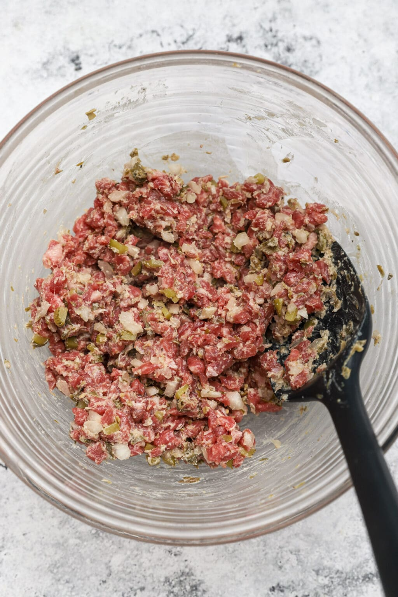

Finely chopped NY Strip steak is flavored with melted butter, Dijon mustard, Worcestershire, cornichons, white onion, and garlic.

Ingredients
Steak:
Melted butter
White onion, cornichons, capers, and garlic
Worcestershire sauce and Dijon mustard
Kosher salt and freshly ground black pepper
A fresh egg yolk
Preparation
Finely chop the beef. You can use a sharp knife or a meat grinder for this. The key is to have a consistent, fine texture.
Place the meat in a mixing bowl, then refrigerate. While the beef is chilling, prep the remaining ingredients.
When ready, add everything to the bowl with the chopped beef: melted butter, chopped onion, chopped cornichons, capers, Worcestershire, Dijon, grated garlic, a pinch of Kosher salt, and freshly ground black pepper. Stir very well, taste, then adjust seasoning.